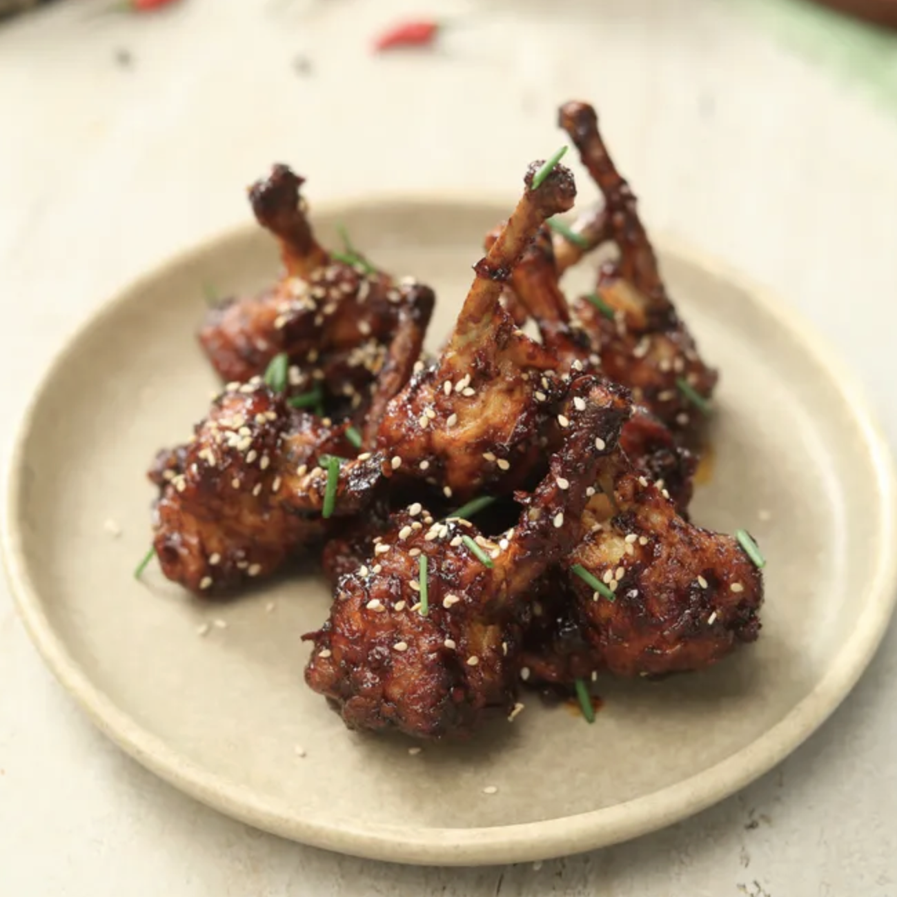

Chicken Lollipop

Description
Chicken lollipop is a popular Indo-Chinese appetizer made with frenched chicken drumettes, deep fried till crisp and tossed in a tangy, spicy garlic sauce. A party favorite, best served hot.
Ingredients
- ½ kg chicken drummettes
- Oil for frying
- ¼ to ½ tsp red chili powder
- ½ tsp garam masala
- Salt to taste
- 4 tbsp cornstarch
- 1 small onion, finely chopped
- ¾ tbsp minced ginger
- ¾ tbsp minced garlic
- 1 tsp vinegar
- 1 tsp sugar
- Spring onions, for garnish
Steps
- In a bowl, add the chicken drummettes along with chili powder, garam masala and salt.
- Sprinkle cornstarch over the chicken and rub well to coat evenly.
- Heat oil in a deep pan until hot.
- Fry the chicken on medium heat, turning occasionally, until crisp and golden.
- Remove the fried chicken and drain on paper towels.
- In a separate pan, heat a little oil and sauté the minced ginger and garlic until aromatic.
- Add the chopped onions and fry until soft and transparent.
- Stir in the soy sauce, vinegar and sugar, mixing well.
- Let the sauce simmer for a minute and thicken slightly.
- Add the fried chicken to the pan and toss until well coated in the sauce.
- Garnish with spring onions and serve hot.
Home